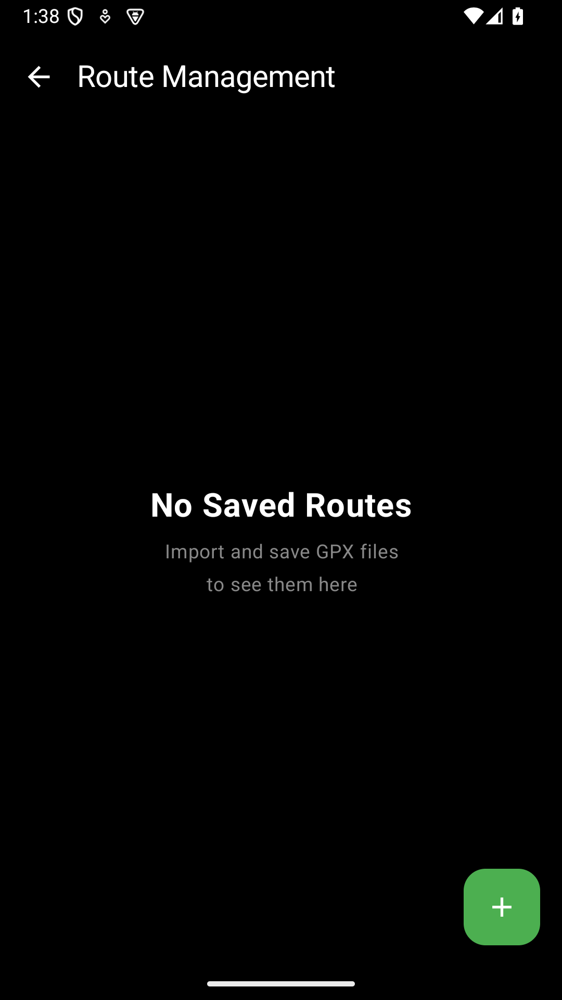

미리 계획한 코스를 GPX 파일로 가져오면 지도 위에 경로를 표시하고, ClimbPro 오르막 정보를 활용할 수 있습니다. 낯선 코스를 달릴 때 꼭 활용해 보세요.

GPX 파일은 Strava, Komoot, RideWithGPS 등 다양한 서비스에서 내보낼 수 있습니다.
저장된 경로를 탭하면 상세 화면에서 코스를 미리 살펴볼 수 있습니다.
경로 이름 수정(편집 버튼)과 삭제(삭제 버튼)도 가능합니다.
좋은 코스를 발견했다면 친구에게 공유해 보세요.